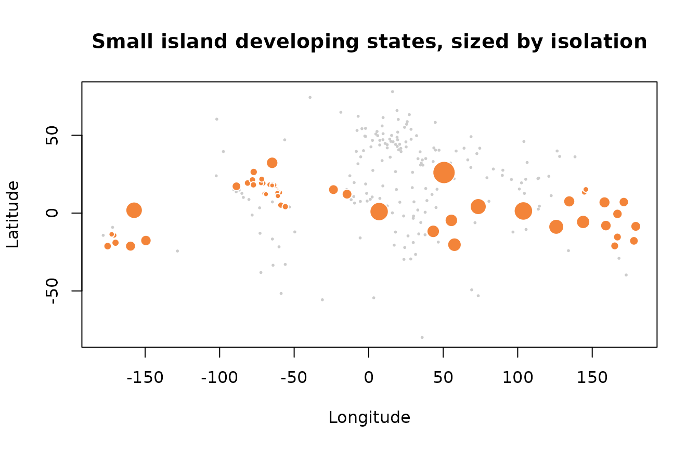

Profiling the world's small island developing states
Source:vignettes/profiling-sids.Rmd
profiling-sids.RmdThe intro vignette shows the mechanics. This one works a small
analysis end to end, using nothing but the bundled islands
data and the package helpers, to show the kind of reproducible profile
islandcodes is meant to make a one-line job rather than a
spreadsheet exercise.
library(islandcodes)
#>
#> Attaching package: 'islandcodes'
#> The following object is masked from 'package:datasets':
#>
#> islands
sids <- islands[islands$is_sids == 1, ]
nrow(sids)
#> [1] 58Who counts, and under what tier
The UN-DESA list mixes fully sovereign states with non-sovereign
associate members. That distinction is analytically load-bearing: an
associate member sits inside a metropolitan constitutional order and
inherits a fiscal backstop that a sovereign micro-state does not. The
sids_tier column keeps the two apart.
table(sids$sids_tier, useNA = "ifany")
#>
#> Associate member Sovereign member
#> 18 40Overlaying the sub-national island jurisdiction axis shows that the two classifications are related but not identical. Every SIDS associate member is a SNIJ, but many SNIJs (Bonaire, the French departments) are not SIDS, because they are constitutionally integrated into the metropole rather than recognised as distinct jurisdictions.
table(SIDS_tier = sids$sids_tier, SNIJ = sids$is_snij == 1, useNA = "ifany")
#> SNIJ
#> SIDS_tier FALSE TRUE
#> Associate member 0 18
#> Sovereign member 38 2How the group distributes across the World Bank taxonomy
Joining the SIDS list onto World Bank region and income group, which is the step that usually means hand-copying from a PDF, is here just a cross-tab on columns that already travel with the data.
table(sids$wb_region)
#>
#> East Asia & Pacific Latin America & Caribbean
#> 21 28
#> Middle East & North Africa North America
#> 1 1
#> South Asia Sub-Saharan Africa
#> 1 6
table(sids$wb_income_group)
#>
#> High income Low income Lower-middle income Upper-middle income
#> 26 3 10 19The income spread is the point most casual treatments of “SIDS” miss: the group runs from high-income territories to lower-middle-income states, so any analysis that treats SIDS as a single development stratum is averaging across a real gap.
Isolation, measured rather than asserted
“Remote” is asserted about small islands far more often than it is measured. With coordinates and a distance helper it becomes a computed quantity. For each SIDS with a known landmass point, take the great-circle distance to its nearest other SIDS.
sids_geo <- sids[!is.na(sids$latitude), ]
codes <- sids_geo$iso_code
D <- island_distance(codes) # symmetric matrix of km
diag(D) <- NA # ignore self-distance
sids_geo$nearest_sids_km <- round(apply(D, 1, min, na.rm = TRUE))The ranking is a reminder that “distance to the nearest SIDS” measures clustering, not absolute remoteness. The top of the list mixes oceans: Bahrain in the Gulf and Singapore in Southeast Asia are not remote in any everyday sense, yet their nearest fellow SIDS is thousands of kilometres away, and they sit alongside genuinely oceanic cases such as São Tomé and Príncipe and Kiribati that are isolated for the opposite reason.
ord <- order(sids_geo$nearest_sids_km, decreasing = TRUE)
head(sids_geo[ord, c("label", "wb_region", "nearest_sids_km")], 10)
#> label wb_region nearest_sids_km
#> 18 Bahrain Middle East & North Africa 3449
#> 202 Singapore East Asia & Pacific 2691
#> 196 São Tomé and Príncipe Sub-Saharan Africa 2682
#> 118 Kiribati East Asia & Pacific 2322
#> 136 Maldives South Asia 2231
#> 224 Timor-Leste East Asia & Pacific 2021
#> 142 Mauritius Sub-Saharan Africa 1752
#> 173 Papua New Guinea East Asia & Pacific 1704
#> 50 Comoros Sub-Saharan Africa 1550
#> 200 Seychelles Sub-Saharan Africa 1550At the other end sit the tightly packed Lesser Antilles, where the nearest peer is a short hop away: Anguilla and Sint Maarten are 23 km apart.
head(sids_geo[order(sids_geo$nearest_sids_km),
c("label", "wb_region", "nearest_sids_km")], 10)
#> label wb_region nearest_sids_km
#> 8 Anguilla Latin America & Caribbean 23
#> 204 Sint Maarten Latin America & Caribbean 23
#> 245 Virgin Islands (British) Latin America & Caribbean 77
#> 246 Virgin Islands (U.S.) Latin America & Caribbean 77
#> 10 Antigua and Barbuda Latin America & Caribbean 80
#> 150 Montserrat Latin America & Caribbean 80
#> 140 Martinique Latin America & Caribbean 83
#> 190 Saint Lucia Latin America & Caribbean 83
#> 90 Guadeloupe Latin America & Caribbean 84
#> 189 Saint Kitts and Nevis Latin America & Caribbean 85A base-R map makes the two regimes visible at once: the whole reference set in grey, SIDS overplotted, sized by isolation.
plot(islands$longitude, islands$latitude,
pch = 16, cex = 0.4, col = "grey80",
xlab = "Longitude", ylab = "Latitude",
main = "Small island developing states, sized by isolation")
points(sids_geo$longitude, sids_geo$latitude,
pch = 21, bg = "#f38439", col = "white",
cex = 0.6 + 2.4 * (sids_geo$nearest_sids_km / max(sids_geo$nearest_sids_km)))
From nearest neighbour to access
Distance to the nearest peer is a blunt instrument. It throws away every observation but one, so an island with a single close neighbour and nothing else within an ocean scores identically to one sitting inside a dense archipelago. The economic geography literature, and the recent remote-sensing work on rural connectivity that borrows from it, uses a decayed sum over all destinations instead: access is mass discounted by distance, summed.
island_market_access() implements that. The package
deliberately does not ship the mass. Population and output are
time-varying and contested, so the figures and their reference year stay
the analyst’s responsibility. With unit mass the function reduces to a
pure peer-accessibility index, which needs no external data and isolates
what the functional form alone contributes.
sids_geo$access <- island_market_access(
codes,
mass = rep(1, length(codes)), # unit mass: proximity to peers, nothing else
theta = 1
)The ranking is Caribbean from top to bottom. All twenty highest-access SIDS sit in the Lesser and Greater Antilles, which is the densest concentration of island jurisdictions anywhere on the planet.
ord_a <- order(sids_geo$access, decreasing = TRUE)
head(sids_geo[ord_a, c("label", "wb_region", "nearest_sids_km", "access")], 10)
#> label wb_region nearest_sids_km access
#> 204 Sint Maarten Latin America & Caribbean 23 0.11118117
#> 8 Anguilla Latin America & Caribbean 23 0.10708402
#> 150 Montserrat Latin America & Caribbean 80 0.08761425
#> 189 Saint Kitts and Nevis Latin America & Caribbean 85 0.08741834
#> 90 Guadeloupe Latin America & Caribbean 84 0.08096295
#> 10 Antigua and Barbuda Latin America & Caribbean 80 0.08017072
#> 63 Dominica Latin America & Caribbean 92 0.07605030
#> 140 Martinique Latin America & Caribbean 83 0.07427292
#> 190 Saint Lucia Latin America & Caribbean 83 0.07289836
#> 246 Virgin Islands (U.S.) Latin America & Caribbean 77 0.06774878
table(sids_geo$wb_region[ord_a][1:20])
#>
#> Latin America & Caribbean
#> 20Set against the nearest-neighbour column it is close to a mirror image, and the Spearman correlation says so. That is worth stating plainly rather than dressing up: at this level the two measures mostly agree, and access does not overturn the isolation ranking.
cor(sids_geo$nearest_sids_km, sids_geo$access, method = "spearman")
#> [1] -0.9492339What access buys is not a different answer but a better-behaved one. Nearest-neighbour distance is a single-observation statistic: it is determined entirely by one peer, so it jumps discontinuously when that peer is added to or dropped from the reference set, and it cannot distinguish Sint Maarten, which has one neighbour at 23 km and thirty more within 1,000 km, from a pair of islands alone in an ocean. Access uses every destination and moves smoothly.
The decay elasticity is a modelling choice, not a fact, so it needs a
sensitivity check rather than a silent default. Here the ordering turns
out to be robust: rank correlation between theta = 0.5 and
theta = 2 is above 0.97, and only six of the fifty-eight
territories move more than five places.
r <- sapply(c(0.5, 1, 2), function(th) {
rank(-island_market_access(codes, rep(1, length(codes)), theta = th))
})
colnames(r) <- c("theta_0.5", "theta_1", "theta_2")
cor(r[, "theta_0.5"], r[, "theta_2"], method = "spearman")
#> [1] 0.9720078The movement that does happen is concentrated in one place, and it is
substantive rather than numerical noise. Guam and the Northern Mariana
Islands climb fifteen and sixteen places as theta rises,
because they are a tight pair inside an otherwise empty stretch of the
western Pacific. That is exactly what a decay parameter encodes: how
much a close cluster compensates for global remoteness. An analyst who
reports one ranking under one unstated theta has hidden
that judgement rather than made it.
moved <- data.frame(label = sids_geo$label, r,
move = abs(r[, "theta_0.5"] - r[, "theta_2"]))
head(moved[order(moved$move, decreasing = TRUE), ], 6)
#> label theta_0.5 theta_1 theta_2 move
#> MP Northern Mariana Islands 45 36 29 16
#> GU Guam 43 35 28 15
#> AS American Samoa 30 29 22 8
#> WS Samoa 31 30 23 8
#> BZ Belize 29 31 35 6
#> BM Bermuda 28 28 34 6With real mass the measure changes character, because access stops being about how many neighbours there are and becomes about who they are. Here the Dutch Caribbean six, using illustrative population in thousands: substitute sourced figures and cite the year in real work.
pop <- c(AW = 108, CW = 156, SX = 43, "BQ-BO" = 25, "BQ-SE" = 3, "BQ-SA" = 2)
sort(round(island_market_access(names(pop), pop), 3), decreasing = TRUE)
#> BQ-BO AW BQ-SA CW BQ-SE SX
#> 2.759 1.464 1.304 1.284 1.081 0.403Bonaire tops the within-Kingdom ranking because it sits between the two population centres of the ABC group, and Sint Maarten comes last despite being the busiest of the SSS islands, because its only near neighbours are the two smallest territories in the set. The spread is a factor of seven from top to bottom.
Widen the destination set to the surrounding mainland economies and that internal structure almost disappears. The six collapse into two flat tiers, ABC and SSS, about twenty per cent apart, and within each tier the differences are negligible.
region <- c(US = 335000, CO = 52000, VE = 28000, DO = 11000, PR = 3200)
sort(round(island_market_access(names(pop), region, to = names(region)), 2),
decreasing = TRUE)
#> CW BQ-BO AW BQ-SA SX BQ-SE
#> 185.70 185.56 184.07 155.66 154.04 154.01The two tables answer different questions. Relative position inside the Kingdom is governed by which islands you are next to; access to the world outside it is governed only by which side of the Caribbean you sit on, and the intra-group distances that dominate the first table are too small to matter in the second.
What these distances are, and what they are not
Every number above rests on one great-circle distance between two points, and that construction has limits worth stating before anyone builds on it.
The coordinates are a single representative point per territory. For
a compact island that is unambiguous. For a dispersed archipelago it is
not: French Polynesia spans some 2,000 km of ocean, and a representative
point for it is a convention, not a location. Where the distinction
matters, which = "capital" gives the alternative anchor,
and the two can differ by hundreds of kilometres.
island_coords("French Polynesia")
#> label iso_code latitude longitude
#> 1 French Polynesia PF -17.6281 -149.4616
island_coords("French Polynesia", which = "capital")
#> label iso_code capital latitude longitude
#> 1 French Polynesia PF Papeete -17.5334 -149.5667Great-circle distance is not travel distance and is emphatically not travel cost. Between two islands there is no road; there is a ferry schedule, an air route with a hub in between, and a container rotation, each with its own geometry. Aruba to Sint Maarten is about 900 km as the crow flies and a connection through a third country in practice. The same caution applies to the market-access numbers: they are a geographic accessibility measure, and calling them market access in the economic sense requires the reader to accept distance as a stand-in for cost. Where actual travel times or freight rates exist, join them onto these codes and use those instead. That is what the package is for.
Nor does a single point capture internal geography. Two territories of equal area and equal distance from everything else can differ sharply in how their own population is distributed relative to a port, which is exactly the variation the satellite-based literature on rural market access is built to measure and which a centroid cannot see.
Finally, a handful of territories carry no coordinate at all and
propagate as NA rather than being silently dropped: the
representative point is missing for the United States Minor Outlying
Islands, and capitals are missing for the uninhabited and capital-less
entries. Checking for those is a step, not an afterthought.
The Dutch Caribbean as a stress test of the coding scheme
The Kingdom of the Netherlands is a compact illustration of why the disambiguation matters. It comprises seven entities: the European metropole and six Caribbean territories, which the dataset returns in one filter. They span both classifications, and the Caribbean six are split geographically into the ABC islands off Venezuela and the SSS islands some 900 km to the northeast.
dc <- islands[islands$political_association == "Dutch Kingdom",
c("label", "iso_code", "sids_tier", "is_snij")]
dc
#> label iso_code sids_tier is_snij
#> 13 Aruba AW Associate member 1
#> 28 Bonaire BQ-BO <NA> 1
#> 58 Curaçao CW Associate member 1
#> 157 Netherlands NL <NA> 0
#> 186 Saba BQ-SA <NA> 1
#> 203 Sint Eustatius BQ-SE <NA> 1
#> 204 Sint Maarten SX Associate member 1
# ABC-to-SSS separation, from Aruba
island_distance("AW", c("Sint Maarten", "Saba", "Sint Eustatius"))
#> SX BQ-SA BQ-SE
#> 961.7026 919.9918 932.9875The Netherlands row earns its place by contrast: it is the only one
that is not a sub-national island jurisdiction and carries no SIDS tier.
The three constituent countries (Aruba, Curaçao, Sint Maarten) are
associate-member SIDS, while Bonaire, Sint Eustatius, and Saba are
special municipalities of the Netherlands proper, so they read as SNIJ
but not SIDS. A country-code package that collapses those three into a
single BQ row cannot produce this table at all: half the
Caribbean territories would vanish or merge. That is the class of silent
error the package exists to remove, and the reason the analysis above is
reproducible from a single bundled dataset rather than a chain of manual
joins.